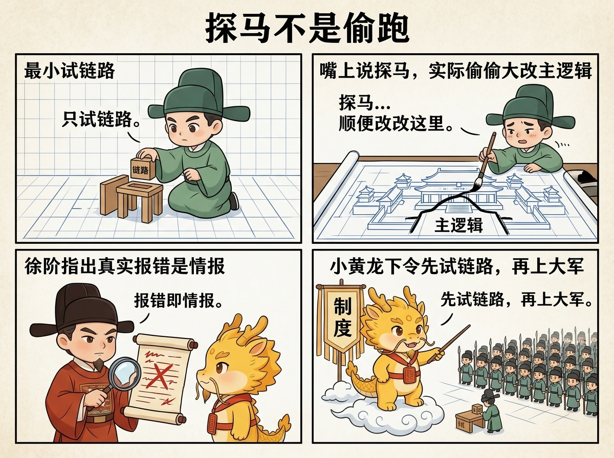
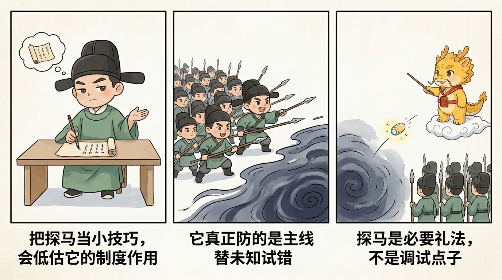

最小闭环与核心礼法
赛博探马机制：先试链路，再上大军
赛博探马机制：先试链路，再上大军
目录
- 这一页解决什么问题
- 为什么探马是必要礼法，而不是调试小技巧
- 什么叫探马
- 为什么真实报错是情报，不是耻辱
- 它和白盒物理对账里的红绿灯机制是什么关系
- 一个简单情景：新同步链路为什么不该直接大推
- 探马为什么能缓解第一部分讲过的痛点
- 最简单的起手方式
- 什么时候可以从探马切到大军推进
- 最常见的四种跑偏
- 一句话压轴
- 相关页面
这一页解决什么问题
前面三页已经把 02 模块的三根骨头立住了：
- 最小闭环，先审方案，再审执行，最后验收证据
- 原子执行合同与赛博起居注，把方案和历史钉细
- 白盒物理对账，钉住什么才算完成事实
但这还不够。
因为在真实工程里，很多任务不是一上来就适合全面推进。尤其是遇到：
- 外部 API
- 新鉴权方式
- 新文件格式
- 新路由
- 新数据库写入
- 新云厂商接口
这类场景最危险的地方，不是“功能还没写完”，而是：系统根本不知道链路通不通，就已经开始动大军。
深水区真正可怕的，从来不是主线正面打不过敌人，而是主线还没见到敌人，就已经在错误前提上开始消耗自己。认证没通、格式未明、写入未实，主逻辑却已经一路铺开；等真实世界终于回手时，系统才发现自己前面推进的不是胜势，而是一长串建立在错觉上的自我扩张。
赛博探马机制要解决的，就是这个问题。
一句话说，它的意思是：
先用最小成本试链路、试权限、试返回、试物证；等真实世界确认这条路能走，再让主线大军推进。

为什么探马是必要礼法，而不是调试小技巧
很多人第一次听到“先试链路，再上大军”，容易把它理解成普通调试习惯，好像就是“先写个小脚本试试看”。这理解太浅了。

在 Cyber-Ming-Protocol 里，探马不是小技巧，而是一条战术礼法。它真正防的是三种深水区高频事故：
- 主阵还没确认能走通，执行位已经开始大面积改代码
- 外部系统其实早就卡死了，但执行位继续在内部模拟推进
- 报错已经足够说明问题，却被当成“丢脸的失败”而不是“前线情报”
所以探马机制的本质，不是“更谨慎一点”，而是：
不要拿主线去替未知世界试错。
这句话要读重一点。探马不是保守主义，不是拖延主义，也不是工程洁癖；它真正拒绝的是：让主线替未知交学费，让大军在还没摸清敌情时先把自己耗空。
这也是它为什么必须接在白盒对账之后。白盒对账告诉系统：总结不能代替证据；赛博探马进一步说：在很多任务里，第一份最值钱的证据根本不是绿灯，而是第一份真实红灯和第一份真实外部返回。
什么叫探马
探马最简单的定义是：
不碰主阵，只用最小动作验证现实世界到底允不允许继续推进。
它通常有几个特征：
- 动作很小
- 目标很窄
- 只验证一条链路
- 只追一个关键真假
- 一旦拿到真实反馈，就立即回报，不顺势扩写主逻辑
所以探马不是“先把功能做个 30% 版本”，也不是“先偷偷做大半截再说”。真正的探马，更接近下面这种动作：
- 先发一个最小请求，看鉴权过不过
- 先跑一个最小输入，看解析能不能拿到有效返回
- 先写一个极小导入动作，看数据库写入是否真的发生
- 先扫一个真实工件，看路径、权限、格式有没有卡死
目标不是立刻成功，而是尽快拿到真实情报。探马越小，情报越干净；情报越干净，主线越不容易在错前提上越走越远。
为什么真实报错是情报，不是耻辱
这是赛博探马机制里最该单独钉死的一句判断：
真实报错不是耻辱，而是情报。
执行位最容易犯的一种病，就是把报错当成“暂时别给主人看”的失败，于是本能地倾向于：
- 先解释一下
- 先绕过去
- 先模拟一个看起来合理的结果
- 等“差不多能跑了”再来报喜
这正是黑盒流派最危险的惯性之一。因为一旦这样做，系统就会失去第一手的底层情报。
探马机制恰恰反过来要求：
- 先把真实报错拿出来
- 先看状态码、错误信息、原始返回
- 先确认问题是在鉴权、路由、格式、资源、环境，还是在代码逻辑本身
在很多深水区任务里，第一份真正推动进展的，不是绿灯，而是那一条终于被逼出来的 401、403、404、格式错误、写入失败、字段缺失。
这也是为什么探马机制和白盒物理对账天然同盟：前者逼出第一手真实反馈，后者防止这些反馈再被总结陈词抹平。前者负责把未知缩到足够窄，后者负责把真相钉到足够死。
它和白盒物理对账里的红绿灯机制是什么关系
这一点最好单独说清楚，不然很容易把探马和红绿灯测试当成两套互不相干的东西。
它们其实是一前一后的关系。
在 白盒物理对账：什么算完成事实 里，红绿灯机制强调的是：
- 先有红灯，证明这条验收线是活的
- 再有绿灯，证明同一问题真的被修掉了
赛博探马机制可以理解成这套红绿灯逻辑在“外部未知世界”上的前置版本。
也就是说：
- 探马拿到的第一份 401、403、404、格式错配、写入失败，本质上就是外部链路的红灯
- 只有在修正最前面的真实阻塞后，探针重新通过，主线才算拿到进入下一阶段的绿灯
所以探马不是绕开红绿灯，而是在主线真正开工前，先给外部链路建立一套最小红绿灯。
两者的区别在于：
- 探马的红绿灯，回答的是“这条路现在能不能走”
- 白盒对账的红绿灯，回答的是“这次改动到底有没有完成”
前者偏前线侦查，后者偏最终验真。
如果把这两层关系说得再白一点，就是：
- 探马先拿外部世界的红灯和绿灯
- 大军推进后，再拿主线实现的红灯和绿灯
- 最后再把两边证据一起并进完成事实
没有探马，主线很容易在外部世界根本走不通时盲推；没有白盒对账，主线即使拿到了局部绿灯，也仍然可能交上一份没有物证的体面总结。
所以这两页不是并列关系，而是紧密咬合的关系：
探马先缩窄未知，再由白盒对账钉死完成。
一个简单情景：新同步链路为什么不该直接大推
假设存在一条新同步链路，要把远端平台的一批记录拉下来，再写入本地系统。
如果按黑盒推进，最常见的走法会是这样：
- 先改认证逻辑
- 顺手改分页拉取
- 再顺手改字段映射
- 再顺手改落盘和导入
- 最后一起跑，期待整条链路自己通
看起来像效率很高，实际风险却极高。因为只要最前面一层鉴权就错了，后面所有改动都会在错误前提上继续堆。到最后，系统不是“差一点就通了”，而是已经在错误地基上盖起了一座相当完整的楼。
探马机制的做法则完全不同。它会把这个任务拆成：
- 先发一个最小请求，只验证鉴权是否通过
- 再发一个最小分页请求，只验证返回格式是否稳定
- 再做一条最小写入，只验证数据库是否接受这类记录
- 每一步都只拿一个真假，不顺势扩展主逻辑
这样做的结果是：
- 如果第一步就 401，那问题已经很清楚：先停在鉴权
- 如果第二步格式不符，那问题就停在返回结构
- 如果第三步写不进去，那问题停在导入层
也就是说，探马不是让系统变慢，而是让问题更早收束。主线最怕的不是慢，而是误把未知当已知，误把假路当通路，最后一边推进一边把自己送进错误前提。
探马为什么能缓解第一部分讲过的痛点
这一页同样必须回接 01-哲学与坐标/，否则它很容易被误解成“调试时多试一下”。
它真正缓解的是第一部分已经讲过的几类结构痛点。
第一，缓解技术失真
在 黑盒多-Agent 的双重失真：技术失真与治理失真 里已经说过，技术失真的核心症状之一，是错误会伪装成推进。
探马机制对这件事的回应非常直接：
- 不让主线在未知条件下大面积推进
- 不让执行位先把内部逻辑写满，再用一句“应该通了”来赌外部世界
- 先拿最小真实反馈，再决定主线是否继续
这会极大降低“链路根本不通，但内部代码已经改了一大片”的失真成本。
第二，缓解治理失真
治理失真的一个核心问题，是执行位太容易一边试探世界，一边替自己解释世界。探马机制则强制把这一步缩到最小：
- 只试一条链路
- 只交一份真实返回
- 只判断这条路现在能不能继续
这会让人类与审计位更容易保住裁决权，因为眼前不是一整片混合叙事，而是一份最小可判定的前线情报。
第三，缓解局部半黑盒下的盲推
在 为什么 AI Coding 已经模糊了 CS 与管理学的界限 里已经讲过：AI coding 会把系统推向局部白盒、局部半黑盒状态。探马机制的价值，正是在这种现实里成立的。既然不可能一开始就把整条未知链路完全看白，那就先把未知压成一个足够小的探针动作。
探马的作用，不是让系统重新变得完全白盒，而是让“未知”本身先变得足够窄。
第四，缓解认知债务与重构抓手流失
如果没有探马，很多失败会在“大推进”里一起发生，最后历史记录里只剩一团：
- 到底先撞在哪
- 哪个环节先暴露问题
- 第一份真实报错是什么
而有了探马，历史里会先留下：
- 第一份鉴权失败
- 第一份格式错配
- 第一份真实写入失败
这些细小但真实的前线情报，正是未来回头重构、排错和偿还认知债务时最有用的抓手。
最简单的起手方式
第一次上手时，不需要写很重的策略文档。最简单的探马起手方式，就是一条很短的话：
先不要动主线。
先写一个最小探针，只验证这条链路最前面的真假。
把真实返回、报错或产物给我看。如果还想更具体一点，可以再补一句：
现在只验证鉴权 / 路由 / 返回格式 / 最小写入中的一个，不要顺势改完整功能。这两句已经足够把执行位从“大军推进模式”拉回“前线侦查模式”。在这一步里，最重要的不是多聪明，而是先克制。前线情报没到，主线就不应自作主张地扩军。
什么时候可以从探马切到大军推进
探马不是永远停在门外。它的意义是先缩窄未知，一旦未知被压缩到足够小，就该切回主线推进。
最简单的判断标准是：
- 最前面的真假已经确认
- 当前阻塞点已经定位到明确层次
- 这一步不再需要靠猜，只需要靠实现
例如：
- 鉴权已经通过，可以进入分页拉取
- 返回格式已经确认，可以进入字段映射
- 最小写入已经成功，可以进入正式导入逻辑
也就是说，探马结束的标志不是“世界已经完全透明”，而是“主线终于知道自己该打哪一层了”。
探马之后，不一定只剩一种推进方式
探马结束后，最常见的下一步当然是回到正常合同开发。
但在另一类任务里，真实情况是：
- 最前面的真假已经被压缩到足够小
- 当前主线已经明确
- 业务本身仍有大量不确定细节，只能边做边逼出真相
这时如果还强行每一小步都退回完整审批仪式，往往会重新落回假确定性。所以从这一版开始，协议多了一条专门处理这类局面的路线：自由开发模式。
它不是放弃探马，而是把探马先逼出来的第一手真相接过去，在红线、主线和 dev_repo 运行时都清楚的前提下，允许一段连续、可控、可回溯的长时推进。
最常见的四种跑偏
第一种：探马变大军
名义上说是先试链路，实际上顺手把主逻辑改了 40%。这不叫探马，只是偷跑。
第二种：有报错，但不肯上报
执行位拿到真实错误后，先解释、先模拟、先补叙，不把第一手错误递上来。这会直接毁掉探马的价值。
第三种：一个探针同时验证五件事
探马一旦同时试太多东西，反馈就会重新变浑。真正的探马要尽量做到一针一真相。
第四种：探马成功后还在无限试探
探马不是拖延主线的借口。最前面的真假已经确认后，就该让大军接管，不要把侦查阶段拖成新的空转。
一句话压轴
赛博探马机制真正要守住的，不是“先谨慎一点”，而是：
不要让主线替未知世界试错。先用最小探针逼出第一手真相，再决定值不值得让大军推进。
在深水区里，很多时候第一份最值钱的战报，不是成功，而是那一条终于被逼出来的真实报错。真正高明的系统，不是从不撞墙，而是不会让主线在没见到墙之前，就先把自己撞散。